Somnai
This is a freelance project for dotdot.london. Angelina Aleksandrovich and Carl Guyenette invited me to take a part in this project and they've been awesome to work with.
I worked on the Unity application for the Fantasy VR experience. In this experience groups of 6 people put on VR backpacks and delve in multiple fantasy scenes.
If you ever find yourself in London please consider going through the Somnai experience. The Fantasy VR experience I worked on is only a small part of it. Somnai is truly unique. Many people compare it to a version of "Black Mirror" or "Westworld" you live through.
Fantasy VR is a networked experience. Users can interact with each other and the world. It's a multi-sensory experience. Smell, wind and heat devices are used to provide multiple layers of immersion. It's an experience designed to work in conjunction with many other experiences before and after it and achieve the vision of the wonderful Connie Harrison.
- Hardware:
We used multiple (38+) OptiTrack cameras and OptiTrack HMD trackers provided by Target3D. For user interactions we used Leap Motion attached in front of each headset. The avatars are driven by FinalIK working in conjunction with Leap Motion and the OptiTrack tracking data.
• Somnai:
The 6 users are guided by an actor. In the virtual world the actor is represented by a glowy sphere called "Somnai". The sphere is controlled by an OptiTrack active tracker.
• Networking:
For networking we used UNET. Working with 6 backpacks can be daunting at times and therefore I set up a remote connection system. The backpacks are running a Client application that automatically discovers and connects to a server. The server is running on the same machine that's connected to the motion capture switch and runs the OptiTrack software.
• Faces:
At one point in the experience the users can see their faces reflected in a puddle. The users are given biometrics bracelets, patient number bracelets and are scanned at the start of the Somani experience. The Fantasy experience loads their faces and displays them for the puddle reflection.
• Scents, wind and heat:
The amazing Grace Boyle from The Feelies created these. It adds another layer of immersion.
• Sensory:
A wooden bridge, multiple props and different floor surfaces are used through the experience to provide a sense of presence to the users.
I'd like to share a few behind the scenes pictures:
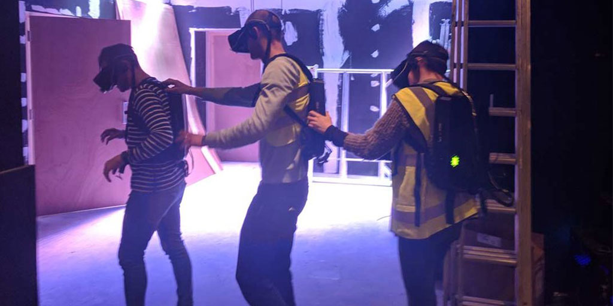
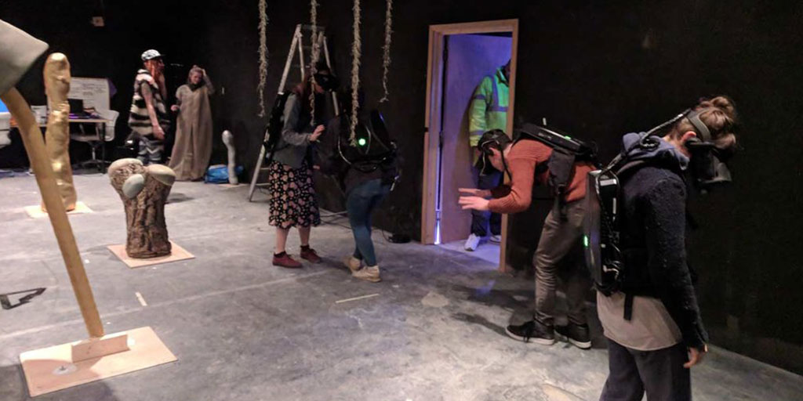
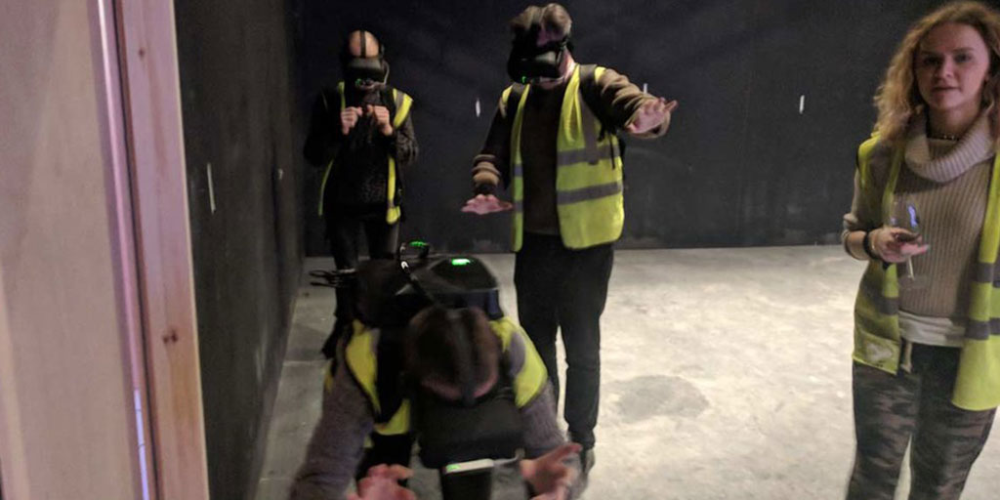
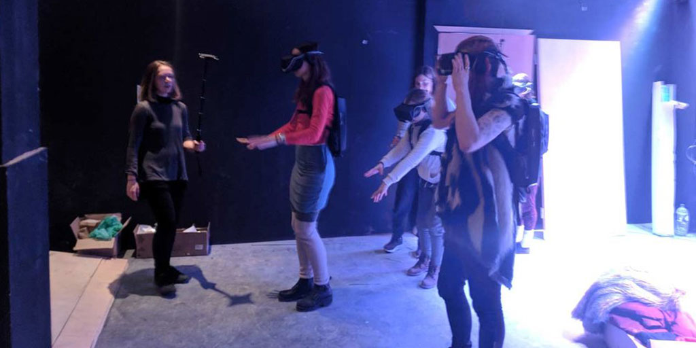
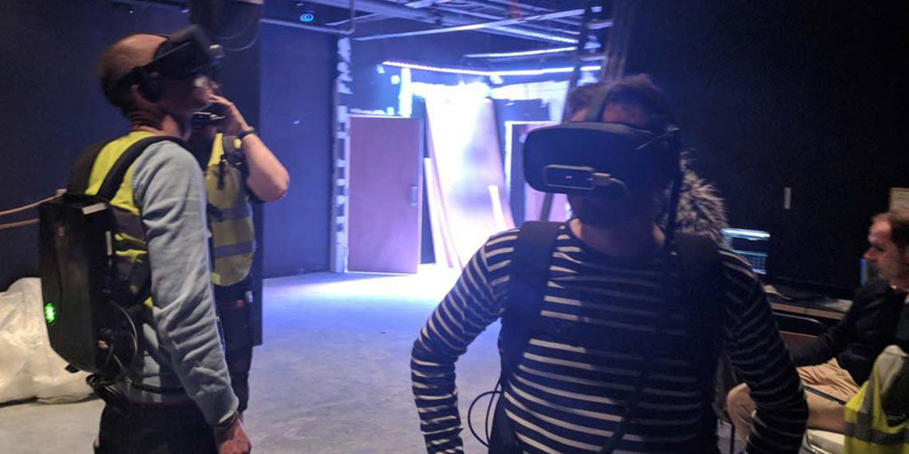
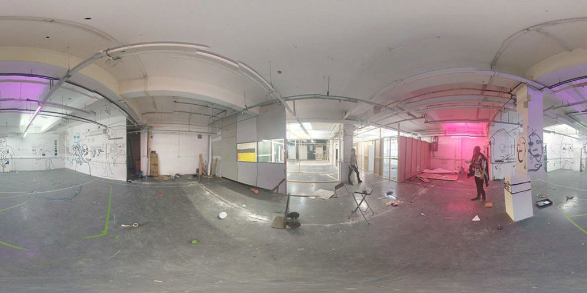
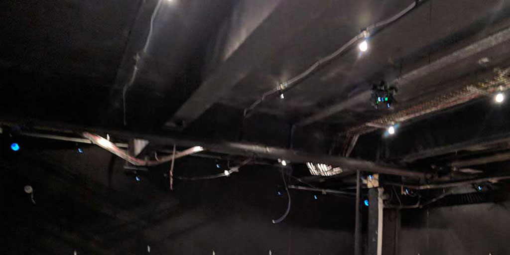
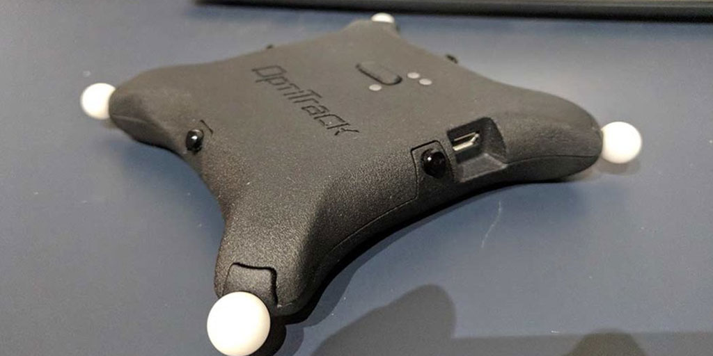
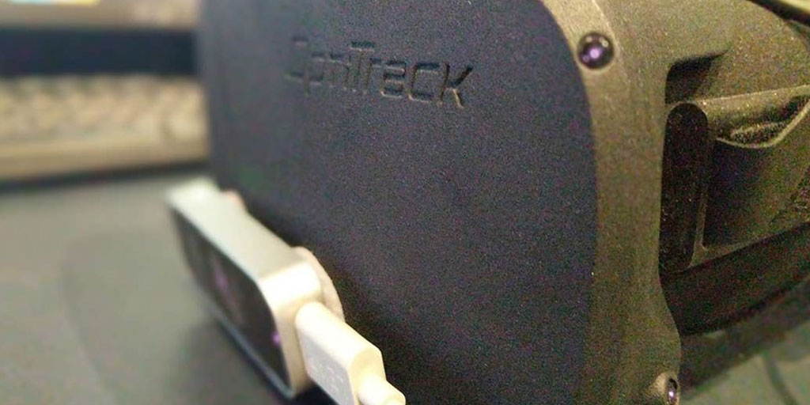
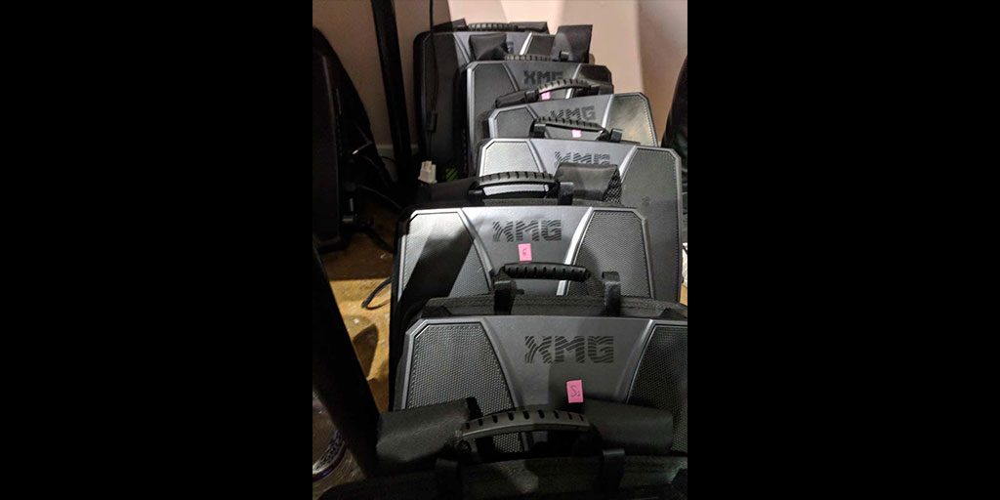
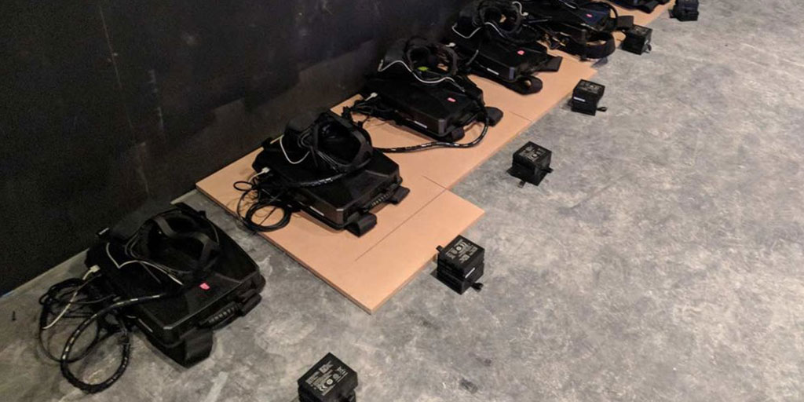
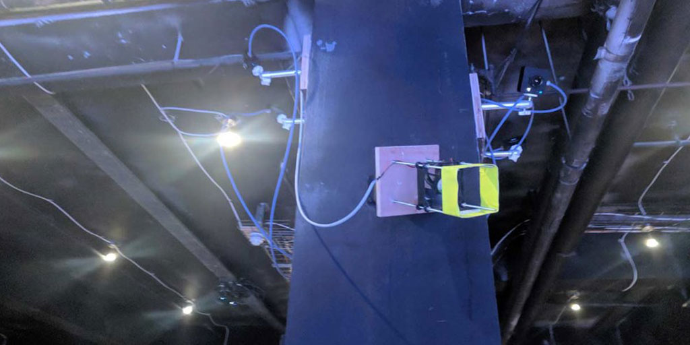
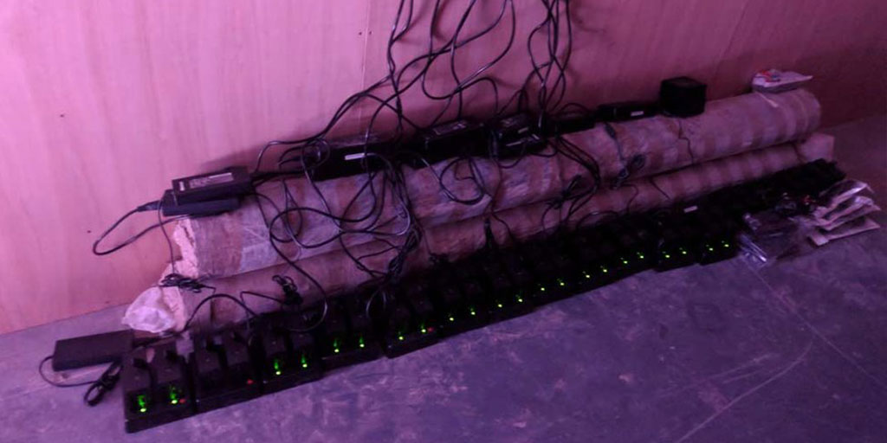
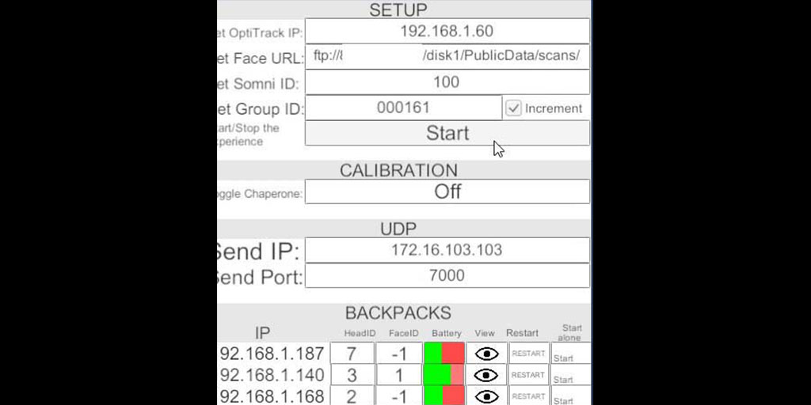
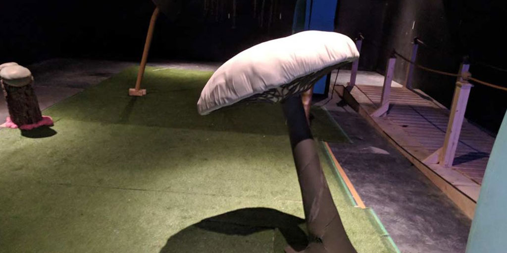
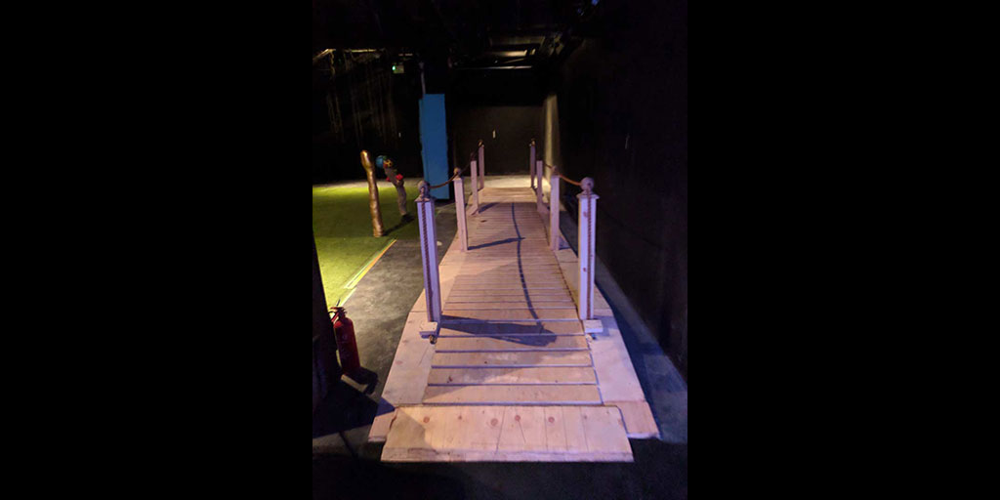
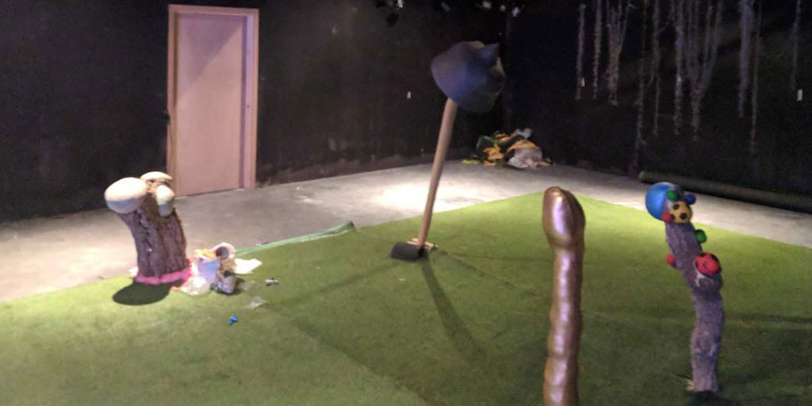
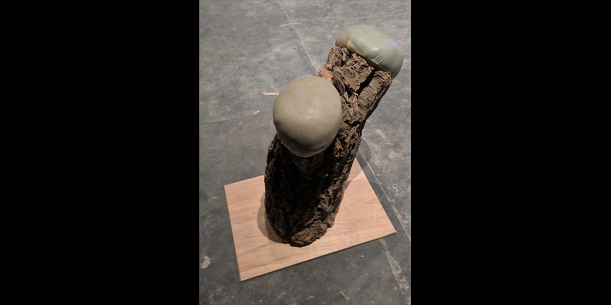
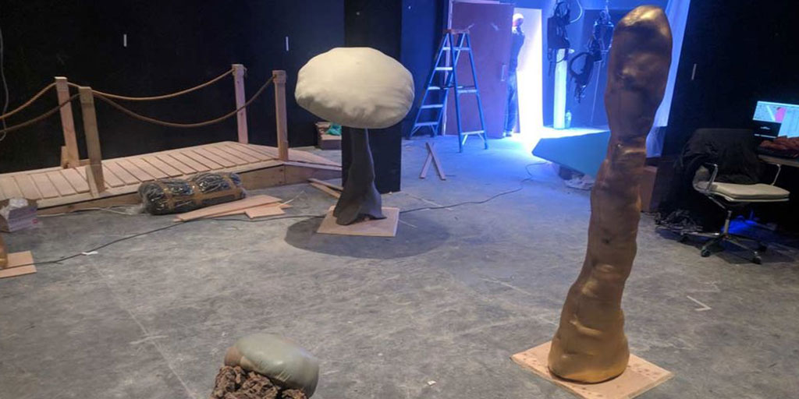
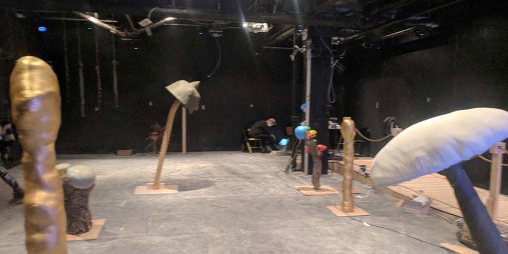
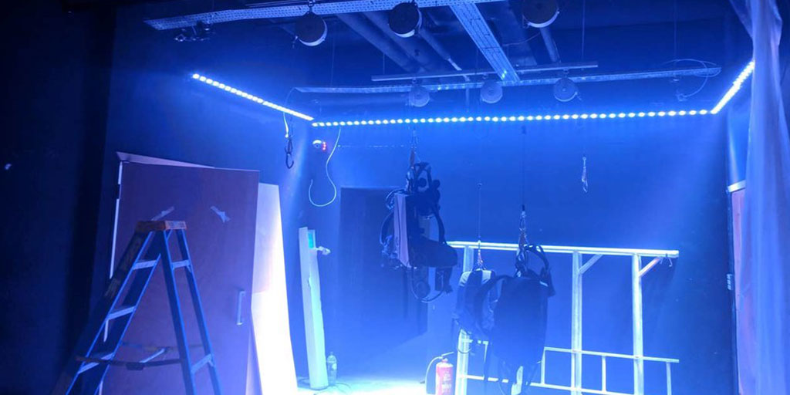

First we visited The Void...

...and then we created our own!